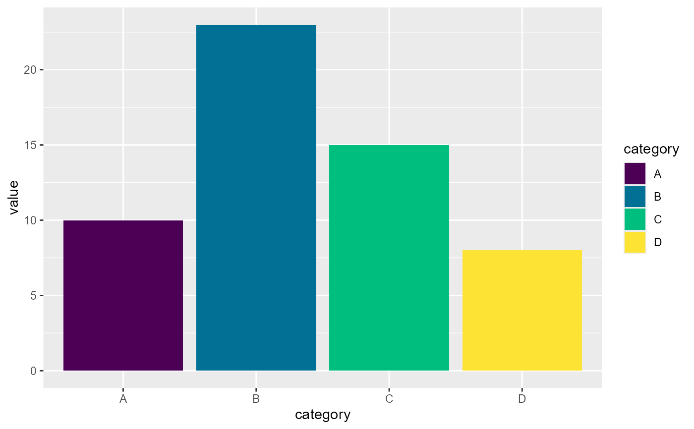

for rest and default coloRify parameters see colorify
Usage
scale_fill_colorify(
...,
aesthetics = "fill",
discrete = FALSE,
nn = Inf,
n = 2,
colors = character(0),
colors_lock = NULL,
hf = 1,
sf = 1,
lf = 1,
rf = 1,
gf = 1,
bf = 1,
hv = 0,
sv = 0,
lv = 0,
rv = 0,
gv = 0,
bv = 0,
hmin = 0,
smin = 0,
lmin = 0,
rmin = 0,
gmin = 0,
bmin = 0,
hmax = 100,
smax = 100,
lmax = 100,
rmax = 100,
gmax = 100,
bmax = 100,
alpha = 1,
seed = 42,
order = 1,
verbose = TRUE
)Arguments
- ...
additional parameters passed to
colorify,discrete_scaleand/orscale_fill_gradientn- aesthetics
string, default: 'fill', see
discrete_scaleandscale_fill_gradientnfor more aesthetics- discrete
boolean, default = FALSE (calls
scale_fill_gradientn), else TRUE (callsdiscrete_scale)- nn
integer, default: Inf, length of gradients, if Inf then set to 256
- n
integer, default: 2, amount of colors(/gradients) to return, only works if not discrete
- colors
character (vector), combination of selecting palette(s) by name (options: see display_palettes()), and/or vector of R color names and/or color hexcodes
- colors_lock
numeric/boolean, default: NULL, numerical or logical index of colors (not) to be modified, if logical length != colors it will be cut or filled with TRUE/FALSE, prefix with '!' for logical vectors and '-' for numerical vectors to get inverse, see examples. If nn %% length(colors) == 0, i.e. if nn divisive by amount of colors without rest, set repeat given locking pattern
- hf
hue factor, default: 1, multiply values by factor, proportional to base value of 1
- sf
saturation factor, default: 1, multiply values by factor, proportional to base value of 1
- lf
lightness/brightness factor, default: 1, multiply values by factor, proportional to base value of 1
- rf
red factor, default: 1, multiply values by factor, proportional to base value of 1
- gf
green factor, default: 1, multiply values by factor, proportional to base value of 1
- bf
blue factor, default: 1, multiply values by factor, proportional to base value of 1
- hv
hue value, default: 0, add value to values, linear from base value of 0 to a maximum value of 100
- sv
saturation value, default: 0, add value to values, linear from base value of 0 to a maximum value of 100
- lv
lightness/brightness value, default: 0, add value to values, linear from base value of 0 to a maximum value of 100
- rv
red value, default: 0, add value to values, linear from base value of 0 to a maximum value of 100
- gv
green value, default: 0, add value to values, linear from base value of 0 to a maximum value of 100
- bv
blue value, default: 0, add value to values, linear from base value of 0 to a maximum value of 100
- hmin
hue minimum threshold, default: 0, expected range (0, 100)
- smin
saturation minimum threshold, default: 0, expected range (0, 100)
- lmin
lightness/brightness minimum threshold, default: 0, expected range (0, 100)
- rmin
red minimum threshold, default: 0, expected range (0, 100)
- gmin
green minimum threshold, default: 0, expected range (0, 100)
- bmin
blue minimum threshold, default: 0, expected range (0, 100)
- hmax
hue maximum threshold, default: 0, expected range (0, 100)
- smax
saturation maximum threshold, default: 0, expected range (0, 100)
- lmax
lightness/brightness maximum threshold, default: 0, expected range (0, 100)
- rmax
red maximum threshold, default: 0, expected range (0, 100)
- gmax
green maximum threshold, default: 0, expected range (0, 100)
- bmax
blue maximum threshold, default: 0, expected range (0, 100)
- alpha
numeric, sets color alpha values
- seed
integer, default: 42, set seed for generation of colors (n > given colors (palettes)) and colors ordering (see order)
- order
default: 1, numeric (vector) to adjust colors order, -1: reverse order, 0: seeded random order, >1: shift order, c(-1, >1): reverse then shift order, or numeric vector as many colors to set custom order (if longer, vector shortened to n colors)
- verbose
default: TRUE, mentions if and how many colors are generated
Examples
## viridis ggplot2 examples Colorified
## non-discrete
dat <- data.frame(x = rnorm(10000), y = rnorm(10000))
if (requireNamespace("ggplot2", quietly = TRUE)) {
ggplot2::ggplot(dat, ggplot2::aes(x = x, y = y)) +
ggplot2::geom_hex() + ggplot2::coord_fixed() +
scale_fill_colorify(colors = 'viridis', n = 4) + ggplot2::theme_bw()
## discrete
df <- data.frame(category = c("A", "B", "C", "D"), value = c(10, 23, 15, 8))
ggplot2::ggplot(df, ggplot2::aes(x = category, y = value, fill = category)) +
ggplot2::geom_bar(stat = "identity") +
scale_fill_colorify(discrete = TRUE, colors = 'viridis')
}
